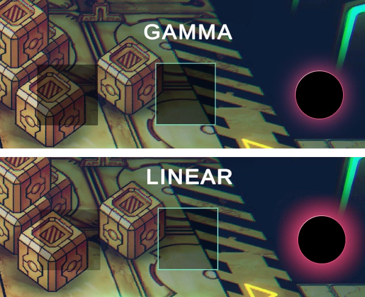
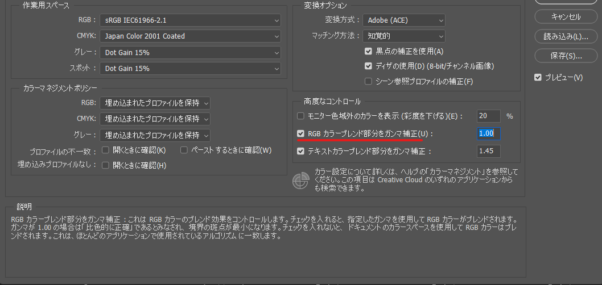

Color SpaceがLinearのときUIの透明度が正しくならない
この記事は「Unityゲーム開発者ギルド Advent Calendar 2023」12/7の記事です。
概要
デザイナーからUIの素材を頂き、UGUIのImageを使って配置したところ、想定と透明度が異なることに気づきました。
設定を見直したところ、どうやらColor SpaceがGammaかLinearで見た目が変わることがわかりました。
以下の画像のように違うのですが、Gammaのときの見た目が正しく、Linearの場合が正しくありません。

Unity 2021.3の環境でプロジェクトを立ち上げるとデフォルトがLinearなので、Linearを選択していたのですが、ここで大きく躓いてしまいました。
（今までデフォルトはGammaだったと思いますが、Linearがデフォルトなのは私の環境だけ？）
最初、何か設定などを見落としているのでは？と思い調べましたがそうではなく、Linearにおける半透明UIの描画処理に関しては仕様や制約といったことのようでした。
シェーダーで近づける
以下のForumで話がされており、シェーダーが作成され公開もされており、近づけることは可能ですが見た目を完全に一致することはできませんでした。
Linear space for scene, gamma for UI?
URPのRendererFeatureを用いる
URP限定ですが、RendererFeatureを用いて、解決することができます。
実際、以下の動画とGithubのサンプルを試したところ解決できることを確認できました。
負荷がどの程度かわからないのと採用事例などがないので少し不安でした。
Youtube - CEDEC2022】ちょっと踏み込んだURP: エンジニアに向けた実践的なナレッジ紹介
Github - CEDEC2022-URP
PhotoshopでUIを作る場合
PhotoshopでUIパーツを作る場合、編集→カラー設定からRGBカラーブレンド部分をガンマ補正をチェックし、
作成すると見た目を合わせたまま作成できると聞きましたが、今回、PhotoshopでUIを作成していないので私は試せていません。

私のゲームでの対応
半透明なUIパーツが比較的多いわけではないので、デザイナーが作った素材とUnity上での表示を並べて表示し、できるだけ一致するように調整することとしました。
使用バージョン
Unity 2021.3.31